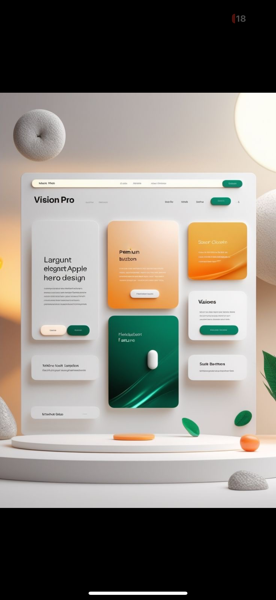
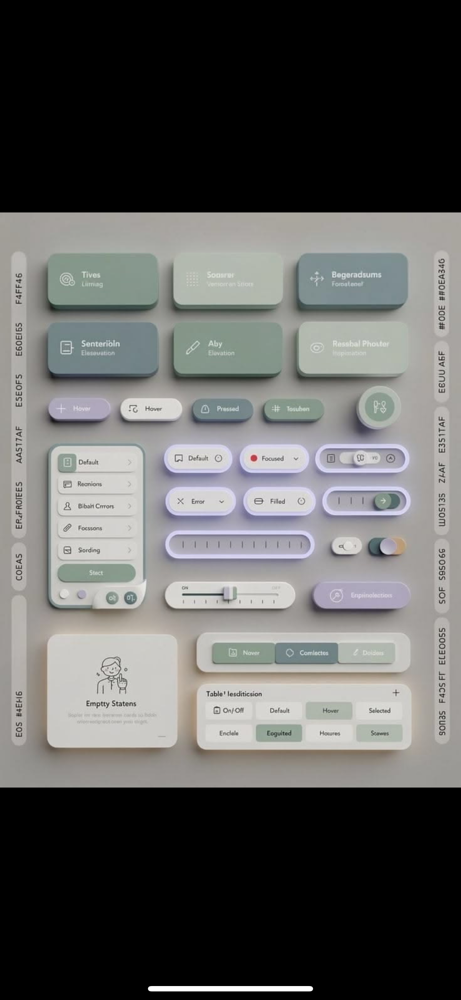
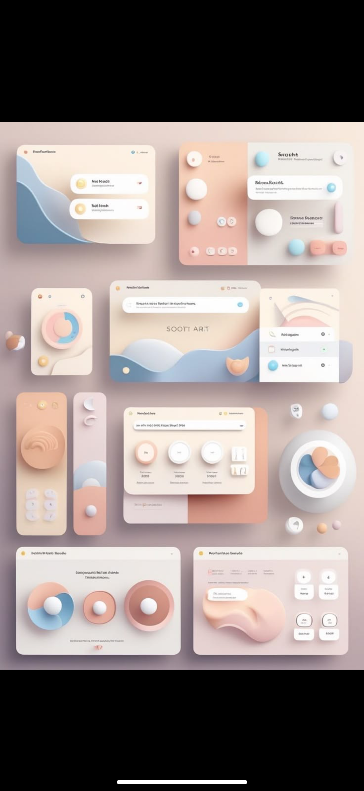

Soft pressure
Raised surfaces for actions. Inset surfaces for focus. Every interaction has a tactile grammar.
Explore ↗Neon Morphism is a tactile design language for calm, confident digital products. Soft shadows, luminous edges, and controls that invite a second touch.
Neon Morphism turns familiar interface patterns into physical-feeling moments. Each layer has a job: guide, reassure, reward.
Raised surfaces for actions. Inset surfaces for focus. Every interaction has a tactile grammar.
Explore ↗Color is not decoration. It is a quiet signal for energy, status, and the next useful thing.
Explore ↗One system, two moods. Light and dark themes share the same rhythm while changing the atmosphere.
Explore ↗Adjust the surface, light, and energy. The system responds in real time.
A small interface for bigger thoughts.
We design systems that feel alive without demanding attention. The right motion at the right time. The right amount of contrast. The confidence of knowing what happens next.
Build your system ↗A collection of reference directions: calm dashboards, expressive product surfaces, and component libraries with a point of view.



Tell us what you are building. We will bring a little more depth to it.
Start a conversation ↗Usually replies within 2 working days.